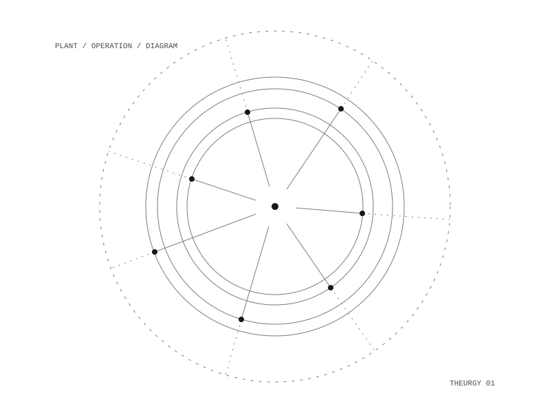

Herbal Theurgy
Herbal Theurgy treats herbalism as theurgic practice in the Iamblichean, Neoplatonic sense: plants engaged as material conduits of intelligible powers, not as metaphor and not as a vague spiritual herbalism. Theurgy is theos and ergon, divine action enacted through matter.

The book
Philosophy and practice in one volume: chapters on what theurgy is and why it is herbal, chapters on how the theurgist works with plants, and a working materia medica of specific plants as theurgic agents.
The class
A working group, in four sessions or over twelve weeks. Each session has a conceptual anchor, a practice, a diagram and group discussion, with short readings and the weight on doing and noticing. It is not a belief group. The first practice is to smell or taste a single plant, juniper if possible, with no interpretation, mythology or intention, and describe only what changes and when.
Talk and residency
Presented as a residency at Aetheria, Crete, and at Black Sky, Crete, both in 2025.
In progress
A working group in four sessions,
or twelve weeks